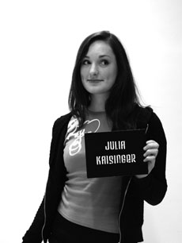
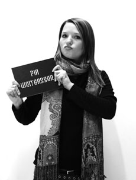
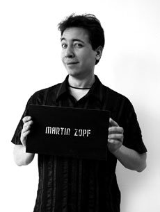
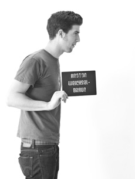

Olivetti Valentine Concept
University of Applied Arts Vienna design students Julia Kaisinger, Pia Weitgasser, Martin Zopf and Tony Weichselbraun reworked/shaped the class typewriter with laptop technology in mind.
Julia Kaisinger

Student
vita
I was born on the 12th of May 1987 in Ried im Innkreis, Austria. In 2006 I graduated at the Higher Technical School for Graphic and Design in Linz. In between I did some internships in different graphic agencies. Afterwards I started studying Architecture on the Technical University in Vienna. Since 2007 I am student of industrial design at the University of Applied Arts in Vienna.
contact
phone: +43 (0) 650 213 13 23
email: j.kaisinger@gmx.at j.kaisinger@gmx.at
projects
Valentine , Third Space , Robotic Healthcare , SolAir concept car , Library of gOld , Agria
Pia Weitgasser

Alumni
vita
I was born in Salzburg / Austria, on December 23th 1985. I graduated from the Bundesrealgymnasium in Salzburg.In 2005, I started studying at the University for Applied Arts in Vienna, Austria. I am now in my junior year. My experience includes an internship at Design a Storz, Zell am See.
projects
Interactive Table Cloth , Valentine , Nutrition Gadget , Diabetes Gadget , na:vi , Babyfon
Martin Zopf

Alumni
vita
Born 1982 in Vienna. Finished school at the HBLA Herbstraße in 2003. Since 2004 student of Industrial Design at the University of Applied Arts, Vienna, in the studios of Borek Sipek, Ross Lovegrove, Paolo Piva and Hartmut Esslinger.
contact
email: martinzopf@gmail.com martinzopf@gmail.com
projects
Valentine , Bösendorfer Tamagotchi , Space Luggage , Crowdsourcing
Tony Weichselbraun

Student
vita
Born (7-10-1986) and raised in Vienna, Austria. Lived in Santa Barbara, California from 1998 to 2001, returned to Vienna and completed High School in 2004. A year of civil service as a paramedic followed. After that, courses taken at the University of Economics for two semesters before being accepted to the University of Applied Arts in Vienna in 2006. Interests: design, playing music, cooking, automobiles.
contact
email: tony.weichselbraun@gmail.com tony.weichselbraun@gmail.com
projects
Interactive Table Cloth , Rockpiano , Valentine , Kaputt.R , DiGuitar , Liability to the Top
Sources: department of industrial design 2